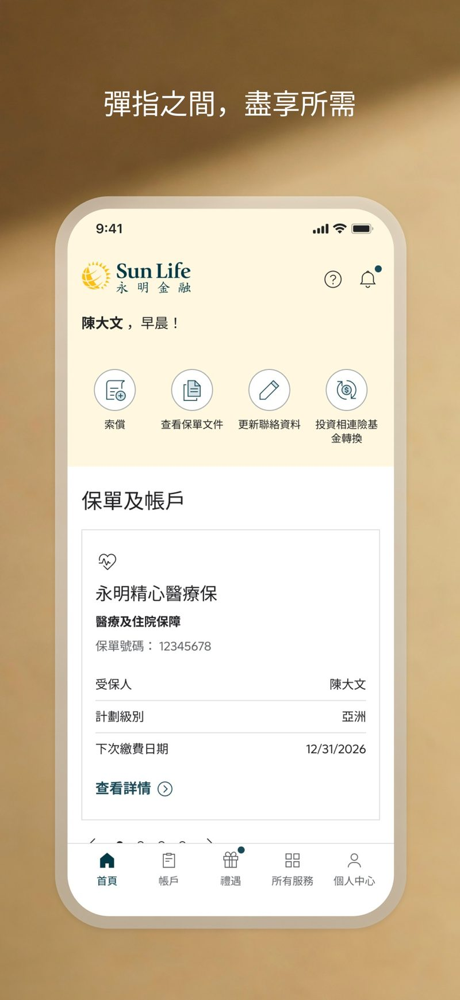

Sun Life MPF — eMPF & Full Portability
Project Manager / Scrum Master for two regulatory-critical MPF initiatives — the eMPF (積金易) platform and 積金全自由行 (MPF Full Portability). The member journey runs through Sun Life's digital touchpoints: the My Sunlife Hong Kong platform — one login for insurance & MPF with MPF Navigator — and Personal Account services for opening, consolidating and transferring savings via eMPF — delivered Agile in a regulated environment with clear backlog priorities, sprint metrics and stakeholder alignment.
My Sunlife HK on the App Store →